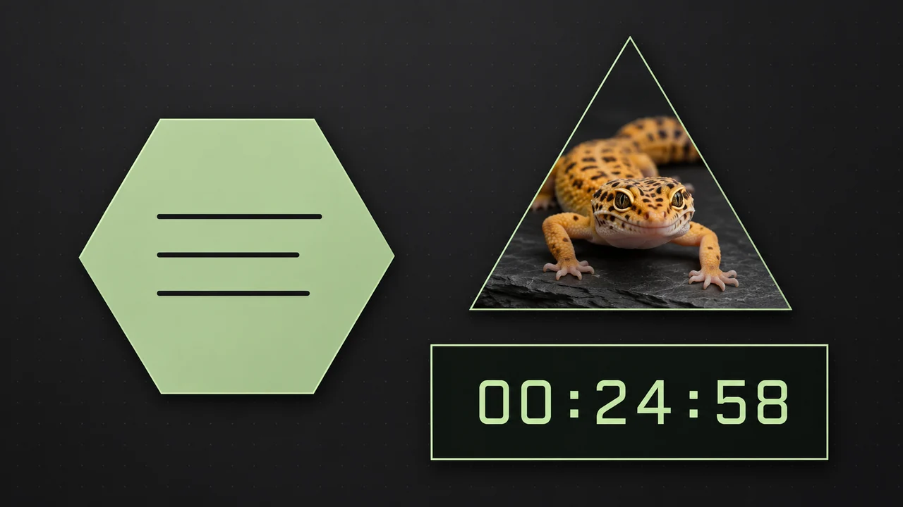

Keep a note in sight
Pin a reminder to your desktop so it stays handy as you switch tasks.
Arrange notes, timers and images in hexagons, triangles and rectangles. Keep what matters where you can see it.
View on GitHub ↗
Enjoying DeskTiles? Please consider giving the project a star on GitHub!
Windows v1.06 · macOS v1.02
Pin a reminder to your desktop so it stays handy as you switch tasks.
Start a focus session and glance at your desktop to see how much time is left.
Keep a favorite photo or reference image nearby and adjust its size, border and transparency.
On Windows, open Desktop layouts in the tray and choose Create from Sage preset. Double-click the hexagonal note to edit it. Replace the triangular photo or drag and zoom to adjust the crop. The 25-minute countdown starts paused.

Native C++17 / Win32 / GDI+. Includes text, images, timers, alarms, Traditional Chinese / English switching and optional sign-in launch with explicit consent.
Windows user guide ↗Native AppKit with the shared C++ core. Supports text, images, timers, group dragging, snapping and JSON layouts. The UI is Chinese; Windows alarms, language switching and sign-in launch are not available.
Universal 2 includes Apple silicon and Intel code. Intel hardware, multiple monitors and other macOS versions still need testing. The app is ad-hoc signed and has not been notarized by Apple.
Layout compatibility: Windows exports v3 and reads v1–v3. Mac exports and reads v1/v2 only; Windows v3 cannot be imported into Mac, even without alarms. Windows can import Mac v2.
Mac guide and limitations ↗Keep a note, a picture or a timer in a hexagon, triangle or rectangle.
Shift-select several tiles, move them together and snap near other tiles.
Adjust size, font, transparent backgrounds and solid, pixel, RGB or breathing borders.
Export JSON with embedded images, then replace or merge on import. Mac cannot import Windows v3 layouts.

Quit the previous app before updating and extract the full archive. Open DeskTiles/DeskTiles.exe on Windows or DeskTiles.app on Mac. Closing the controller hides it; use the app menu to save and exit.
Windows
33A4B3FDA786CB6CBA79154202968A5B2A46D281C48780B47C099407B7EBCECAmacOS
A864E6AFA4B2B765A0294D54EA907F68989A677811AF0F80EC62537A355C0FC8The archives retain their third-party MIT notices. No project-wide license is asserted here.
Windows 中文 Markdown ↓ · Windows English Markdown ↓ · macOS 中文 Markdown ↓ · macOS English Markdown ↓ · macOS third-party notices ↓ · macOS example JSON ↓ · Project README ↓
Before updating, save and exit the old app, then extract the complete new archive. On Windows, choose Save and exit DeskTiles from the tray; X only hides the controller. Keep your existing layout.
This 30-second Windows demo uses a fictional layout. The video and screenshots show an earlier interface.
The project reports 235 Windows core checks, 192 checks of the extracted package and 38 layout and CLI checks, plus 170 Mac core checks, Universal 2, icon loading and signature checks. The website publisher verifies the supplied files and hashes; it does not rerun the application tests.
The project confirmed that a background-layout alarm fired on schedule after an app restart. The Mac build is still unnotarized, with Intel hardware and multi-monitor testing pending. Linux is not available.
GitHub release tag ↗ · Mac validation workflow ↗
Windows: C++17 / Win32 / GDI+ · macOS: Objective-C++ / AppKit / C++